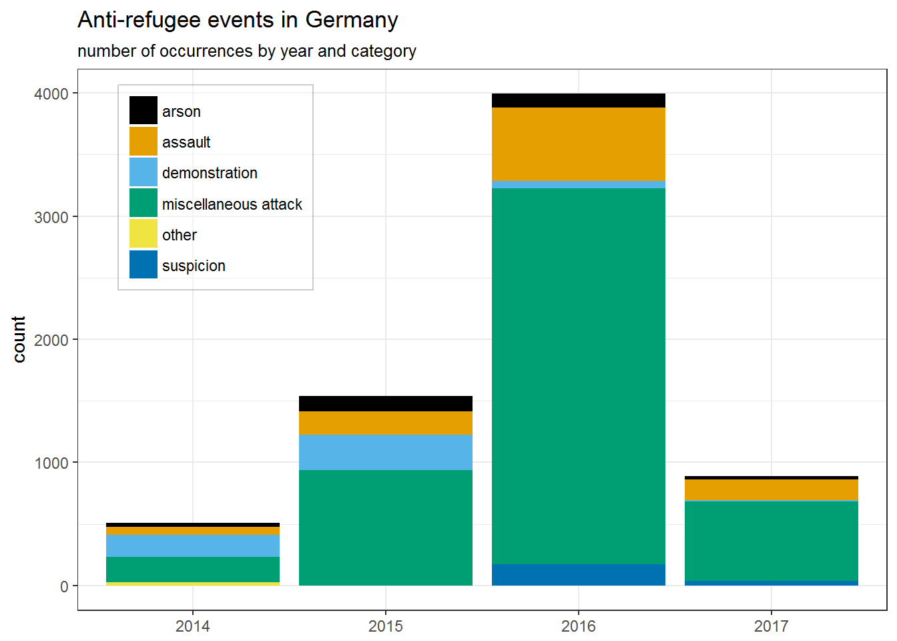
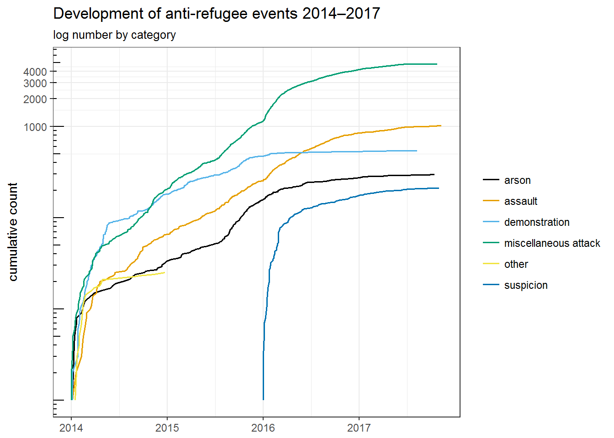
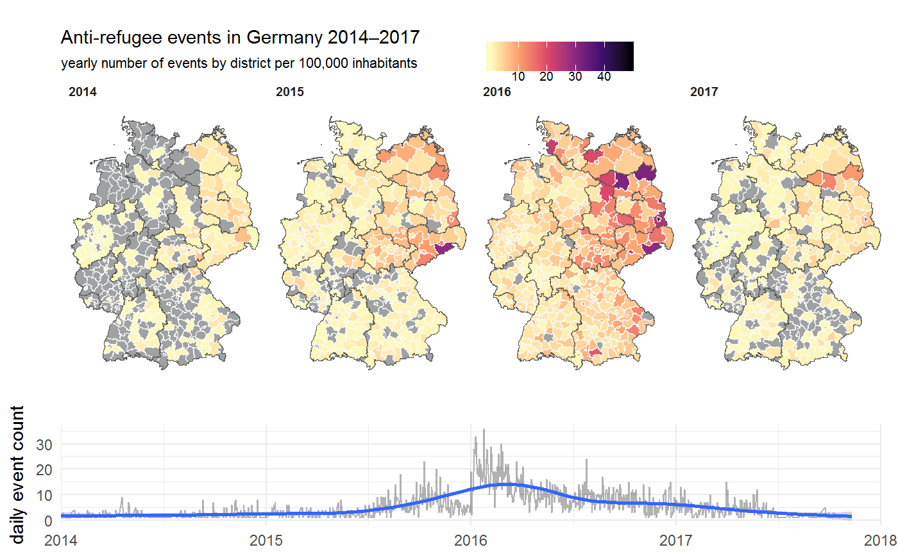

arvig.Rmdlibrary(tidyverse)
library(arvig)
library(stringr)
library(lubridate)
library(sf)
library(ggthemes)The set of geocoded event data on anti-refugee violence and demonstrations in Germany is based on a public chronicle maintained by the civil society project “Mut gegen rechte Gewalt” (“Courage against right-wing violence”) and was created to fill a gap in readily available, spatially disaggregated data for social science research.
With rising numbers of refugees and asylum seekers arriving in Europe, particularly in Germany and Sweden, instances of right-wing violence have been occuring more frequently. arvig by now covers a period of four years and includes 6918 unique events that have been categorised as politically motivated and directed at refugees.
The unit of observation in arvig is an individual event and the dataset includes several pieces of information to characterise them: Time and place of each event are indicated by the date, location (city, town or even urban district), federal state as well as the 12-digit community-ID used by German official statistics, facilitating merging with other data sources.1 Furthermore, arvig also contains geo-coordinates for all events. These are usually precise at the level of municipalities; in large cities such as Berlin or Hamburg they can even be more specific if the information about urban districts is included in the original source.2 However, since this level of precision is not upheld systematically, interpreting spatial variance within municipalities is not recommended.
All events are assigned to one or more of the following five categories (which are included both in the original German as well as in English):
examples <- c("Swastika graffiti on walls of refugee accomodation.", "Demonstrations against the intake or accomodation of refugees in Germany.", "Assault of a person whose status as a refugee has been confirmed.", "Arson attack on an official shelter or private accomodation of refugees.", "Other types of racist actions directed at refugees (only concerns few events from 2014).", "Events of any category for which an anti-refugee motive has not yet been established.")
arvig %>%
filter(!str_detect(category_de, "&")) %>% # exclude multi-category combinations
distinct(category_de, category_en) %>%
mutate(`Example/Description` = examples) %>%
knitr::kable()| category_de | category_en | Example/Description |
|---|---|---|
| Sonstige Angriffe | miscellaneous attack | Swastika graffiti on walls of refugee accomodation. |
| Kundgebung/Demo | demonstration | Demonstrations against the intake or accomodation of refugees in Germany. |
| Tätlicher Übergriff/Körperverletzung | assault | Assault of a person whose status as a refugee has been confirmed. |
| Brandanschlag | arson | Arson attack on an official shelter or private accomodation of refugees. |
| sonstige | other | Other types of racist actions directed at refugees (only concerns few events from 2014). |
| Verdachtsfall | suspicion | Events of any category for which an anti-refugee motive has not yet been established. |
With regard to demonstrations it is important to note that due to their widespread occurrence in 2015 Mut gegen rechte Gewalt restricted their documentation to demonstrations during which laws may have been broken, starting January 2016.
A small number of events is assigned to more than one of these categories. For example, there have been cases where not only refugee accommodations were attacked with rocks or xenophobic graffiti but also individual refugees were assaulted. In order to have a unique assignment to one of the five base categories, arvig provides the function split_events() that splits these multi-category events into multiple rows, one for each category. In the instance of an observation that was assigned to arson & miscellaneous attack, the event is duplicated and there is one observation for arson and one for miscellaneous attack.
Violence and demonstrations against refugees have soared in Germany especially during the years 2015/16. A sharp drop in the total number of events in 2017 is primarily due to significantly fewer miscellaneous attacks. However, we can only cautiously assess the past year for now because there is a considerable time lag with which events are being reported and included in the dataset.
arvig %>%
split_events() %>%
count(year = year(date), category_en) %>%
ggplot(aes(factor(year), n, fill = category_en)) +
geom_col() +
scale_fill_colorblind(name = NULL) +
theme_bw() +
theme(legend.position = c(0.05, 0.97),
legend.justification = c(0, 1),
legend.background = element_rect(fill = alpha("white", 0.4),
colour = alpha("black", 0.2))) +
labs(title = "Anti-refugee events in Germany",
subtitle = "number of occurrences by year and category",
x = NULL, y = "count")
arvig %>%
split_events() %>%
mutate(facet_group = category_en == "miscellaneous attack") %>%
group_by(category_en) %>%
mutate(cumulative = 1:n()) %>%
ggplot(aes(date, cumulative, colour = category_en)) +
geom_line(size = 0.7) +
scale_color_colorblind(name = NULL) +
coord_trans(y = "log10") +
annotation_logticks(scaled = FALSE) +
theme_bw() +
labs(title = "Development of anti-refugee events 2014–2017",
subtitle = "log number by category",
x = NULL, y = "cumulative count")
Putting to use the geographic information we can have a look at the spatial distribution of events throghout Germany. In order to visualize it, we first need a suitable shapefile. This one is provided by GeoBasis-DE / BKG (2018) and includes layers for several administrative levels from country down to municipality.
# german_districts <- st_read("../raw_data/vg250-ew_3112.utm32s.shape.ebenen/vg250-ew_ebenen/VG250_KRS.shp") %>%
# filter(EWZ > 0) %>%
# mutate(RS = as.character(RS))
# save(german_districts, file = "./inst/extdata/german_districts.rda", compress = "xz")
#
# german_states <- st_read("../raw_data/vg250-ew_3112.utm32s.shape.ebenen/vg250-ew_ebenen/VG250_LAN.shp") %>%
# filter(EWZ > 0) %>%
# mutate(RS = as.character(RS))
# save(german_states, file = "./inst/extdata/german_states.rda", compress = "xz")
load(system.file("extdata", "german_districts.rda", package = "arvig"))
load(system.file("extdata", "german_states.rda", package = "arvig"))# limit analysis to four event categories
keep_categories <- c("arson", "assault", "demonstration", "miscellaneous attack")
# total events by year per 100,000 inhabitants
event_map_by_year <- german_districts %>%
right_join(expand(., RS, year = 2014:2017), "RS") %>%
left_join(arvig %>%
split_events() %>%
filter(category_en %in% c("arson", "assault", "demonstration", "miscellaneous attack")) %>%
mutate(RS = str_sub(community_id, 1, 5)) %>%
count(RS, year = year(date)),
c("RS", "year")) %>%
ggplot() +
geom_sf(aes(fill = n/EWZ*100000), colour = "#FAFBFB", size = 0.001) +
geom_sf(data = st_boundary(german_states), colour = "#595959", size = 0.1) +
facet_grid(~year) +
scale_fill_viridis_c(name = NULL, direction = -1, option = "A", na.value = "#A0A1A2") +
theme_map() +
theme(panel.grid.major = element_line(colour = "transparent")) +
theme(legend.position = c(0.5, 1.05),
legend.justification = c(0, 0),
legend.background = element_rect(fill = "transparent"),
legend.direction = "horizontal") +
theme(strip.background = element_blank(),
strip.text=element_text(hjust=0, face="bold")) +
labs(title = "Anti-refugee events in Germany 2014–2017",
subtitle = "yearly number of events by district per 100,000 inhabitants")
# timeline of event counts
timeline <- arvig %>%
split_events() %>%
filter(category_en %in% c("arson", "assault", "demonstration", "miscellaneous attack")) %>%
mutate(time = lubridate::floor_date(date, "days")) %>%
count(time) %>%
ggplot(aes(time, n)) +
geom_line(alpha = 0.3) +
geom_smooth(method = "gam", formula = y ~ s(x, bs = "cs")) +
scale_x_date(limits = c(dmy("01-01-2014"), dmy("01-01-2018")), expand = c(0, 0)) +
theme_minimal() +
theme(plot.margin = margin(t = 5, r = 10, b = 5, l = 5, unit = "pt")) +
labs(x = NULL, y = "daily event count")
# spatio-temporal plot
time_plot <- cowplot::plot_grid(event_map_by_year, timeline, align = "v", axis = "l", ncol = 1, rel_heights = c(0.75, 0.25))
plot(time_plot)
#
# # events by category and year per 100,000 inhabitants
# p <- germany %>%
# right_join(expand(., RS, year = 2014:2017, category_en = keep_categories), "RS") %>%
# left_join(arvig %>%
# split_events() %>%
# filter(category_en %in% keep_categories) %>%
# mutate(RS = str_sub(community_id, 1, 5)) %>%
# count(year = year(date), RS, category_en),
# c("RS", "year", "category_en")) %>%
# ggplot() +
# #geom_sf(data = germany_municip) +
# geom_sf(aes(fill = n/EWZ*10000)) +
# coord_sf(crs = "+proj=utm +zone=32 +ellps=GRS80 +units=m +no_defs") +
# facet_grid(category_en~year) +
# scale_fill_viridis_c(direction = -1, option = "A") +
# theme_map() +
# theme(panel.grid.major = element_line(colour = "transparent")) +
# theme(legend.position = "bottom")More information on the structure of the community ID (Regionalschlüssel in German) can be found on Wikipedia and in a register by the German Federal Statistical Office.↩
e.g. distinguishing between Hamburg Farmsen, Bergedorf and Billstedt.↩